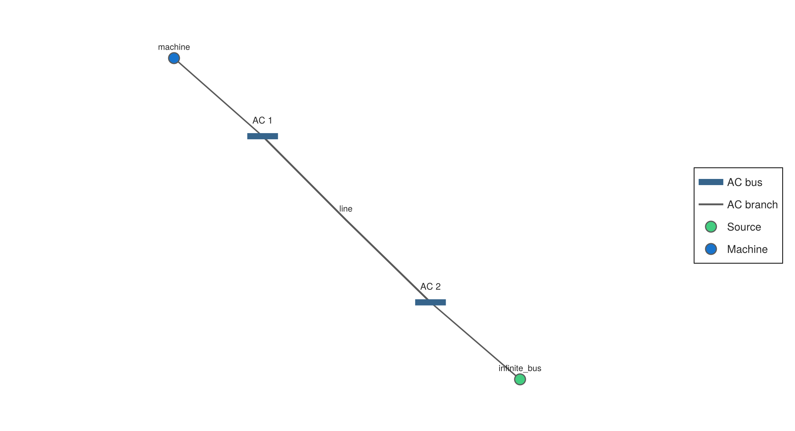
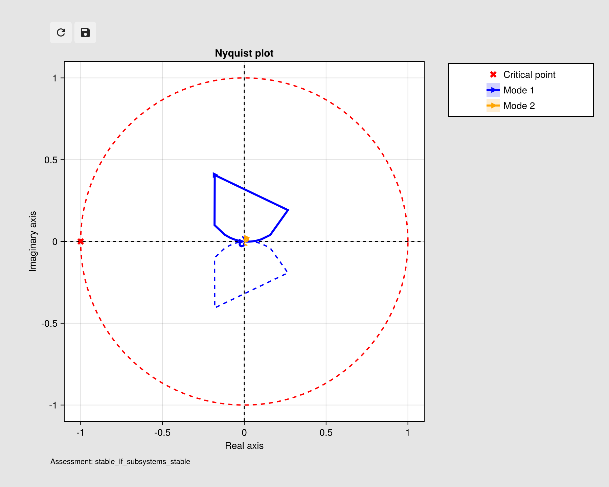

Getting started: a single-machine infinite-bus system
This example connects a synchronous machine to an ideal infinite bus through a three-phase impedance. It calculates the operating point and displays the network, then plots the driving-point impedance and generalized Nyquist response at the machine bus.
using PowerImpedance
using PowerImpedance.NetworkBuilder: Bus, define
using GraphMakie
using CairoMakieDefine the machine, infinite bus, and line
Machine power-flow setpoints use per-unit values on the machine base. The source voltage and the network base follow the package's phase-voltage base.
voltage_base = 220 / sqrt(3)
machine = synchronousmachine(
S_base = 1000.0,
Vᵃᶜ_base = 220.0,
powerflow = (p = 0.5, q = 0.0, v = 1.0),
)
elements = (
; machine,
infinite_bus = ac_source(v = voltage_base),
line = impedance(z = 0.01 + 0.1im, conductors = 3),
)(machine = SynchronousMachine
elec: ElectricalSM
mech: MechanicalSM
avr: AVRSM
gov: GovernorSM
limits: PowerImpedance.Limits
Vᵃᶜ_base: Float64 220.0
bases: BaseValues
powerflow: @NamedTuple{p::Float64, q::Float64, v::Float64}
, infinite_bus = PowerImpedance.Source
conductors: Int64 3
domain: PowerImpedance.ACABCDomain PowerImpedance.ACABCDomain()
v: Float64 127.01705922171767
theta: Float64 0.0
p: Float64 0.0
q: Float64 0.0
limits: PowerImpedance.Limits
ABCD: Array{ComplexF64}((6, 6)) ComplexF64[1.0 + 0.0im 0.0 + 0.0im … 0.0 + 0.0im 0.0 + 0.0im; 0.0 + 0.0im 1.0 + 0.0im … 0.0 + 0.0im 0.0 + 0.0im; … ; 0.0 + 0.0im 0.0 + 0.0im … 1.0 + 0.0im 0.0 + 0.0im; 0.0 + 0.0im 0.0 + 0.0im … 0.0 + 0.0im 1.0 + 0.0im]
, line = PowerImpedance.Impedance
value: Array{ComplexF64}((3, 3)) ComplexF64[0.01 + 0.1im 0.0 + 0.0im 0.0 + 0.0im; 0.0 + 0.0im 0.01 + 0.1im 0.0 + 0.0im; 0.0 + 0.0im 0.0 + 0.0im 0.01 + 0.1im]
ABCD: Array{ComplexF64}((6, 6)) ComplexF64[1.0 + 0.0im 0.0 + 0.0im … 0.0 + 0.0im 0.0 + 0.0im; 0.0 + 0.0im 1.0 + 0.0im … 0.009999999999999998 + 0.1im 0.0 + 0.0im; … ; 0.0 - 0.0im 1.1102230246251565e-16 + 1.5407439555097887e-33im … 1.0 + 1.3877787807814457e-17im 0.0 - 0.0im; 0.0 - 0.0im 0.0 - 0.0im … 0.0 - 0.0im 1.0 + 1.3877787807814457e-17im]
conductors: Int64 3
)The machine and infinite bus connect to opposite ends of the line. The AC buses use d/q coordinates for analysis.
connections = (
Bus(:machine_bus; ports = ((:machine, :ac), (:line, :side1)), domain = ACDQ),
Bus(:infinite_bus; ports = ((:line, :side2), (:infinite_bus, :ac)), domain = ACDQ),
)
network = define(
elements,
connections;
options = (; voltageBase = voltage_base),
)
Network implemented via NetworkState
-----------------------------------
Nb. of elements: 3
Nb. of connections: 8
With following options: (voltageBase = 127.01705922171767,)
Inspect the network and calculate its operating point
The diagram shows the two buses and the connected machine, line, and source.
diagram_view = diagram(network; interactive = false)
diagram_view.figure
Power flow supplies the steady-state terminal values used to linearize the machine. Linearization then produces the frequency-domain network model.
power_flow = compute(PowerFlowProblem(network), ACDCPowerFlow())
linearized = compute(
LinearizationProblem(network, power_flow),
AdmittanceLinearization(),
)LinearizationResult{AdmittanceLinearization{PowerImpedance.PIACDC}, PowerImpedance.NetworkBuilder.NetworkModel{ComplexF64}, @NamedTuple{powerflow_required::Bool, active_elements::Int64, passive_elements::Int64}}(AdmittanceLinearization{PowerImpedance.PIACDC}(PowerImpedance.PIACDC), NetworkModel
------------
Passive elements: 1
Active elements: 1
Grounded nodes: [:infinite_busq, :infinite_busd]
Retained nodes: [:machine_busd, :machine_busq]
, OperatingPoint(Dict{Symbol, NamedTuple}(:machine => (ac = ACPortValues(128.6490129710614, 0.0005699499594402798, -500.0, -4351.10084283388),), :infinite_bus => (ac = ACPortValues(127.01705922171767, 0.0, 446.1633564160698, 3064.633343758837),))), (powerflow_required = true, active_elements = 1, passive_elements = 1))Calculate impedance and stability responses
The same frequency range and machine-bus nodes are used for both responses.
response_problem = PowerImpedanceProblem(
linearized.network_model;
nodes = [:machine_busd, :machine_busq],
frequency_range = (1.0, 1000.0, 300),
)
impedance_response = compute(response_problem, NodalImpedance())
loop_gain = compute(response_problem, LoopGain())
nyquist = compute(StabilityProblem(loop_gain), GeneralizedNyquist())StabilityResult{GeneralizedNyquist{PowerImpedance.PIACDC}, @NamedTuple{frequencies::Vector{Float64}, eigenloci::Matrix{ComplexF64}, encirclements::@NamedTuple{clockwise::Vector{Int64}, counterclockwise::Vector{Int64}, net::Int64}, assessment::Symbol, margins::Vector{Any}, unstable_frequencies::Vector{Float64}}, @NamedTuple{}}(GeneralizedNyquist{PowerImpedance.PIACDC}(PowerImpedance.PIACDC, 5), :nyquist, (frequencies = [6.283185307179586, 6.430034648949794, 6.580316123965173, 6.7341099473528105, 6.891498209011588, 7.0525649174289775, 7.217396044521901, 7.386079571525612, 7.558705535955076, 7.73536607966393 … 5103.62627932311, 5222.907205019088, 5344.975940491128, 5469.897641867952, 5597.738988094182, 5728.568216521327, 5862.455159330513, 5999.471280806565, 6139.689715483159, 6283.185307179586], eigenloci = ComplexF64[-0.0006342397661011408 - 0.00959256202300694im 0.0008447942894201808 + 0.009232376363492997im; -0.0006288524533903184 - 0.009726336643319625im 0.0008523967266377205 + 0.009354925537128833im; … ; 0.00036910437691550215 - 3.63275365206953e-5im 0.0003268302005125738 - 3.214284022720824e-5im; 0.00036029752051457077 - 3.5474479623041654e-5im 0.0003196601021885297 - 3.1449150737809465e-5im], encirclements = (clockwise = [0, 0], counterclockwise = [0, 0], net = 0), assessment = :stable_if_subsystems_stable, margins = Any[(phase = NamedTuple[], gain = NamedTuple[(margin = 41.06725851659953, frequency = 6.496942604146123)], vector = (margin = 82.4380127190141, frequency = 48.4862648123908)), (phase = NamedTuple[], gain = NamedTuple[], vector = (margin = 100.0319660596555, frequency = 999.9999999999999))], unstable_frequencies = Float64[]), NamedTuple())Plot the results
The impedance plot shows the machine-bus driving-point response. The Nyquist plot shows the generalized eigenloci for the calculated loop gain.
impedance_plot = only(PowerImpedance.plot(impedance_response; display_plot = false))
impedance_plot.figure
nyquist_plot = only(PowerImpedance.plot(nyquist; display_plot = false))
nyquist_plot.figure
Continue with component definitions, power-flow initialization, and impedance and stability analysis.
Back to Examples